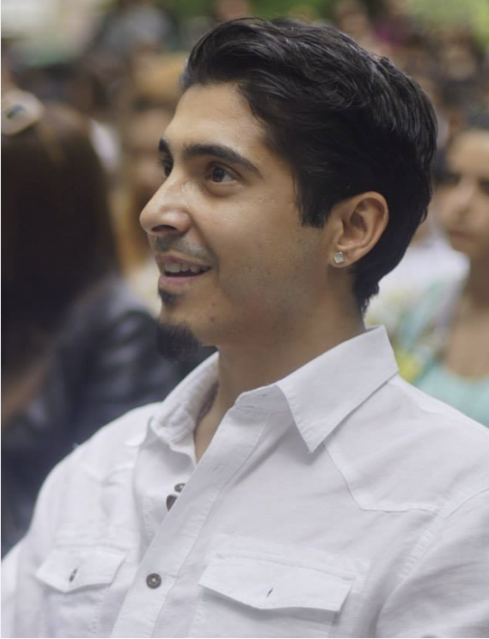
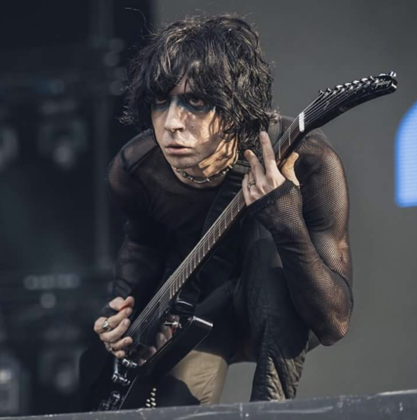
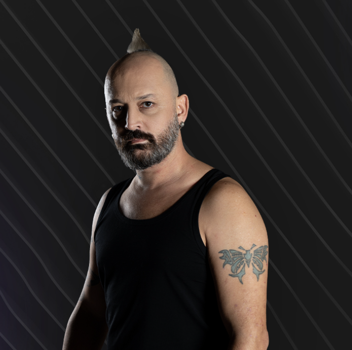

Anasayfa Manga Hakkında Şarkılar
| Üye Adı | Üye Hakkında | Üyenin Resmi |
|---|---|---|
| Ferman Akgül | Asıl adı İbrahim Ferman Akgül, Türk sanatçıdır. Rock grubu maNga'nın solisti ve şarkı yazarı olarak tanınmıştır. 25 Aralık 1979'da Ankara'da doğdu. Aslen Sivas, Şarkışlalıdır. Akgül'ün anlatımına göre dedesi, Aşık Veysel ile beraber köy köy gezip müzik icra ederlermiş. Ankara Anadolu Lisesi'nde okuduğu dönemlerde klasik gitar çalmaya başladı. Ama asıl müzik ile tanışması dokuz yaşındayken ailesinin aldığı piyano ile oldu. 1998'de Gazi Üniversitesi Mimarlık Fakültesi'ne girdi ve çalıştığı ilk gruplarla bu dönemde tanıştı. İlk olarak Virgin Pulp adlı bir hardcore grubunda yer aldı. Turntable çalmak için girdiği grupta solist olmadığı için turntable alana kadar solistlik yapmaya başladı ve böylece solistliğe ilk adımını attı. Daha sonra Colic grubuyla ve Özgür Can Öney'in de davulcusu olduğu 70'lik grubuyla çalışmaya başladı. 70'lik ile birlikte uzunca bir süre çalıştıktan sonra Cem Bahtiyar'ın da bas gitaristi olduğu Seven grubuna girdi, ardından bir süre müziğe ara verdi. Sonra Özgür'ün daveti ile henüz yeni kurulmuş ve solisti olmayan bir grubun çalışmasına katıldı. 2001 yılının sonralarına doğru girdiği, henüz adı bile olmayan bu grubun adı daha sonra maNga oldu. |  |
| Yağmur Sarıgül | Yağmur Sarıgül Türk besteci ve maNga grubunun elektro gitaristidir. Yağmur Sarıgül, sanatsever bir ailenin tek oğlu olarak Antalya'da dünyaya geldi. Ailesinin müziğe olan yeteneğini fark etmesiyle, henüz ilkokul yıllarında müzik eğitimine başladı. Özel derslerin yanı sıra, Hacettepe Üniversitesi Ankara Devlet Konservatuvarı'nda Yrd. Doç. A. Oya Ünler'den piyano ve sonrasında üçüncülükle kabul edildiği Bilkent Üniversitesi Müzik bölümününde Prof. Leda Cenaz'dan keman eğitimi aldı. Orta öğrenimini Ankara Anadolu Güzel Sanatlar Lisesi'nde tamamlayan Sarıgül, Doç. Dr. Süleyman Tarman ile başladığı klasik gitar eğitimine daha sonra Güneş Apaydın’la devam etti. Bu süre zarfında bir yandan da çeşitli popüler müzik gruplarıyla çalışmalar yapmaya başladı. Ardından girdiği Gazi Üniversitesi Müzik Öğretmenliği bölümünde Yrd. Doç. Dr. Selçuk Bilgin'den caz ve pop gitar eğitimi aldı.maNga'yı 2001 yılında kurmadan önce Laterna ve 6/8 gruplarının gitaristiydi. 2002 yılında maNga'nın katıldığı "Sing Your Song" yarışmasında "Siemens En değerli grup elemanı" ödülünü aldı. 2007 yılında Cort gitar firması ile destek anlaşması yaparak Cort sanatçısı olmuştur. Halen kayıtlarında ve canlı performanslarında Cort Viva-7 model yedi telli elektro gitar ile Cort Turkish Edition model elektro gitar kullanmaktadır. Müzisyen kişiliğini yanı sıra maNga ile olan "Şehr-i Hüzün"de yardımcı prodüktör olarak yer almıştır. Büşra adlı 2009 tarihli filmin müziklerinde emeği vardır. |  |
| Cem Bahtiyar | Cem Bahtiyar, maNga grubunun bas gitaristidir. 18 Ocak 1979 yılında Denizli'de doğdu. Anadolu Lisesinde orta 2. sınıftayken hobi olarak klasik gitar dersleri almaya başlayan Cem, ilerleyen senelerde ailesinin hediye ettiği bas gitarıyla profesyonel müzik hayatına atıldı. "Bitti Rüya" şarkısının klibinde kullandığı kırmızı bas gitar ailesinin hediye ettiği ilk gitardır. İlk konserini 16 yaşındayken Denizli Belediyesi Sanat Merkezinde verdi. Denizli Belediye Konservatuvarı ve Denizli Anadolu Lisesinden mezun olduktan bir yıl sonra Bilkent Üniversitesinde bankacılık ve finans bölümünü okudu. Müziğe 3 yıl kadar ara verdikten sonra maNga'nın solisti Ferman Akgül'ün de vokalistliğini yaptığı “Seven” grubuyla tekrar bas gitar çalmaya başladı. Bu grup çalışmalarına son verdikten sonra maNga'ya katıldı, maNga'nın yanı sıra Göksel ve Emre Aydın ile de çalışmıştır. | |
| Özgür Can Öney | Özgür Can Öney, maNga isimli müzik grubunun bateristidir. Ankara Üniversitesi Fen Fakültesi Astronomi Uzay Bilimleri bölümünden ayrılan ve Anadolu Üniversitesi Kamu yönetimi bölümünde öğrenci olan Özgür Can Öney, lise yıllarında Kaya Bayazıtoğlu Lisesi'de kurduğu Reblos isimli grupla müzik hayatına başlamıştır. Davul konusunda ise ilk olarak Gürcan Konanç’tan metot takibi ve nota okuma üstüne özel ders almıştır. Yakın arkadaşları ile daha sonra üniversite yıllarında önce Garnitür daha sonra 70'lik ismini alan bir cover grubu kurmuş ve bu grupla çeşitli barlarda çalmıştır. 1999'da Deli Gömleği'ne katılmış, onlarla da 2 demo kaydetmiş ve birçok bar programı ve üniversite şenliğinde yer almıştır. Aynı zamanda ANETİT ve A. Ü. Hukuk Fak. Atölye Oyuncuları bünyesinde yer alarak bazı tiyatro oyunlarının müziklerini yapmıştır. 2002 yılında maNga grubuna katılmıştır. 2004 yılında İstanbul'a yerleşen ekip albüm çalışmalarına başlamıştır. 2004 yılı, aralık ayında ilk albümlerini çıkaran grup, çok büyük bir başarı yakalayıp bu albüm ile altın plak almışlardır. 2006 yılında Pelin Öney ile evlenmiştir. maNga ile son 4 yıl içinde yurt içinde yaklaşık 50 il ve il merkezi ile yurt dışında 6 ülkede 300'ün üzerinde konser vermiştir. Özgür Can Öney hala Manga ile müzik yapmaya devam etmektedir. Turkish Cymbals ve Efekt Zil endorser'ıdır, Tama davulları kullanmaktadır. Eşi Pelin Öney'dir. Deniz Tuna ve Barış Sava isminde iki erkek çocuk babasıdır. |  |